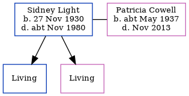

Sidney George Light 1930 - c1980
[ Home ] | [ Calendar ] | [ Surnames Index ] | [ Errors ] | [ Family History ]Sidney Light, the husband of Patricia Mary Cowell (the cousin on the mother's side of Nigel Horne), was born in Thanet, Kent, England on 27 Nov 19301,2,3 and. He married Patricia (with whom he had 2 surviving children Neil M and Tina M) in Thanet around Aug 19574. On 29 Sept 1939, he was living at 35 Prestedge Avenue, Ramsgate, Kent, England1.
He died c. Nov 1980 in Thanet2.
Citations
- 1939 Register - Findmypast (was the son of the head of the household)
- England & Wales deaths 1837-2007 - Findmypast
- England & Wales, Birth Index: 1916-2005 Online publication - Provo, UT, USA: The Generations Network, Inc., 2008.Original data - General Register Office. England and Wales Civil Registration Indexes. London, England: General Register Office. © Crown copyright. Published by permission of the Cont
- England & Wales, Marriage Index: 1916-2005 Online publication - Provo, UT, USA: The Generations Network, Inc., 2009.Original data - General Register Office. England and Wales Civil Registration Indexes. London, England: General Register Office. © Crown copyright. Published by permission of the Cont
Media
England & Wales marriages 1837-2008 - BMD/M/1957/3/AZ/000949/125
England & Wales births 1837-2006 - BMD/B/1931/1/AZ/000726/056
England & Wales deaths 1837-2007 - BMD/D/1980/4/AZ/000689/003
1939 Register Transcription - TNA-R39-1767-1767F-008-13
Family Tree
Map
Generated by ged2site. Last updated on Jul 3, 2024